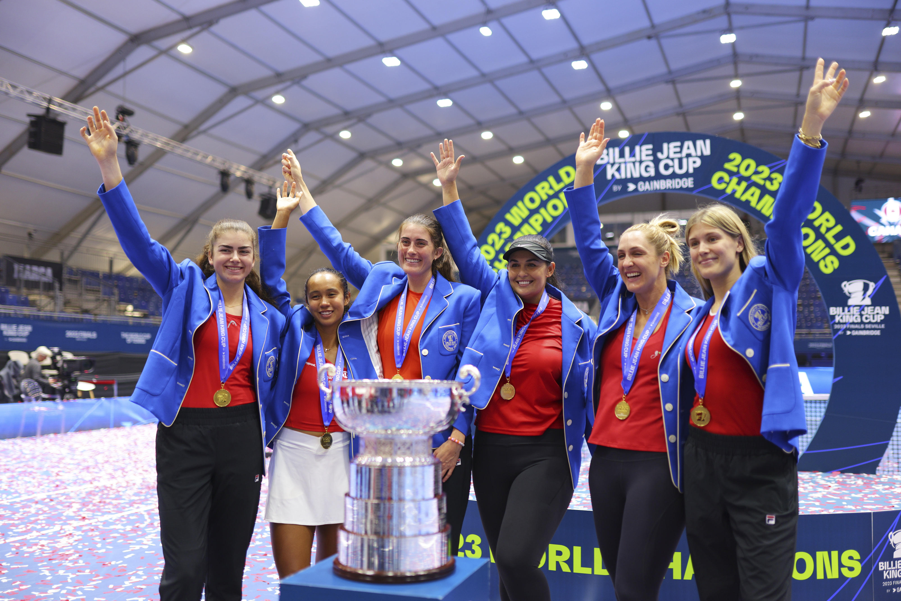

Tournaments
In tennis there are 4 different types of events that are played throughout the year . They include 250's , 500's , 1,000's , and grand slams . These tournaments determine the total amount of points that the winner can earn . At grand slams players can earn up to 2,000 points or the lowest at 250 .
November 12 - November 21
Billie Jean Cup , Saville , Spain : April 14 - November 12 